Posledný zápas
FKM Nové Zámky2:0 OK Častkovce
OK Častkovce
Fotky: FKM Nové Zámky, 24. 10. 2026
Návrh webu, nie oficiálna stránka klubuNávrh nového webu OK Častkovce, nie oficiálna stránka klubu. Oficiálny web: okcastkovce.sk
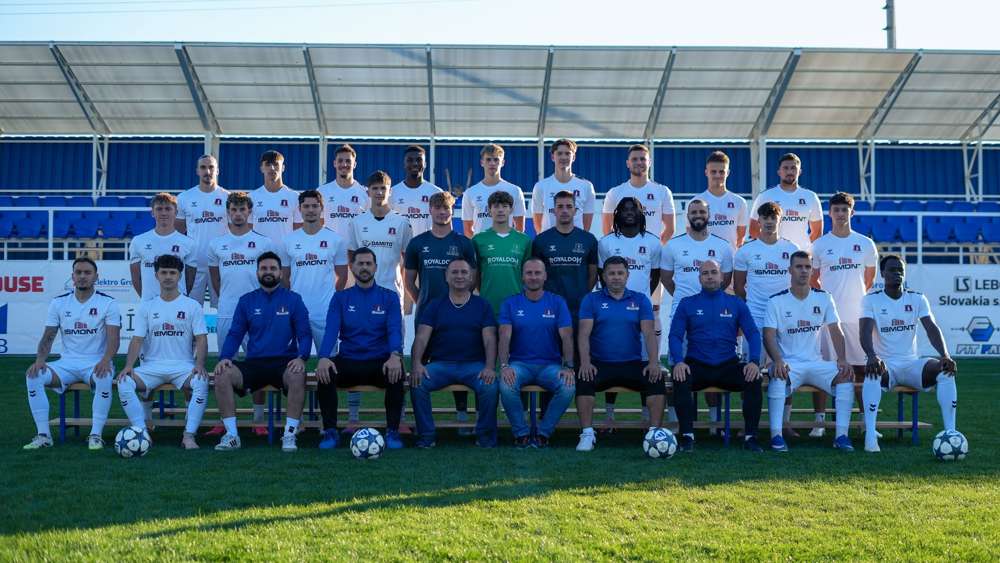
Muži
Posledný zápas
Najbližší zápas
Naposledy: prehra 1:4 · 30. 5. 2026
Ďalší zápas
Naposledy: výhra 4:2 · 7. 3. 2026
Súpiska A-mužstva zatiaľ nie je zverejnená.
Mgr. Roman Koňušík
ne 8. 11. 2026
so 14. 11. 2026
so 24. 10. 2026
so 17. 10. 2026
pi 9. 10. 2026
so 3. 10. 2026
so 26. 9. 2026
so 19. 9. 2026
ne 13. 9. 2026
so 5. 9. 2026
so 29. 8. 2026
so 22. 8. 2026
so 15. 8. 2026
pi 7. 8. 2026
so 6. 6. 2026
so 30. 5. 2026
so 23. 5. 2026
so 16. 5. 2026
so 9. 5. 2026
so 2. 5. 2026
ne 26. 4. 2026
so 18. 4. 2026
pi 10. 4. 2026
so 4. 4. 2026
ne 29. 3. 2026
so 21. 3. 2026
so 14. 3. 2026
so 7. 3. 2026
so 28. 2. 2026
so 8. 11. 2025
ne 2. 11. 2025
so 25. 10. 2025
pi 17. 10. 2025
so 11. 10. 2025
st 8. 10. 2025
so 4. 10. 2025
so 27. 9. 2025
so 20. 9. 2025
št 11. 9. 2025
ne 7. 9. 2025
so 30. 8. 2025
st 27. 8. 2025
so 23. 8. 2025
so 16. 8. 2025
so 9. 8. 2025
st 6. 8. 2025
ne 3. 8. 2025
Výsledky si môžete pozrieť aj na sportnet.sme.sk.
 15
15 15
15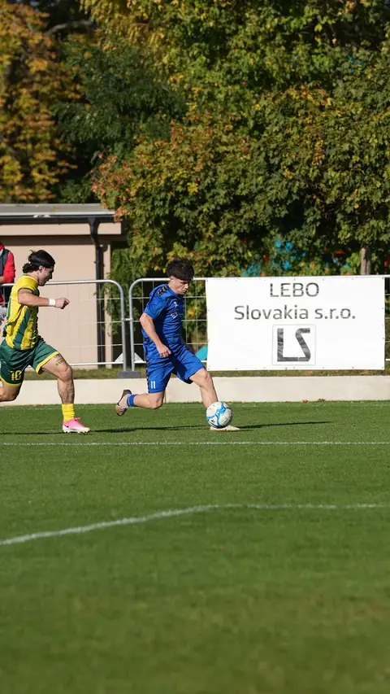
15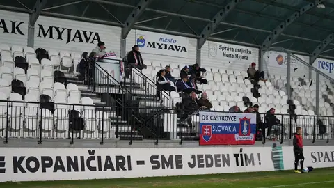
15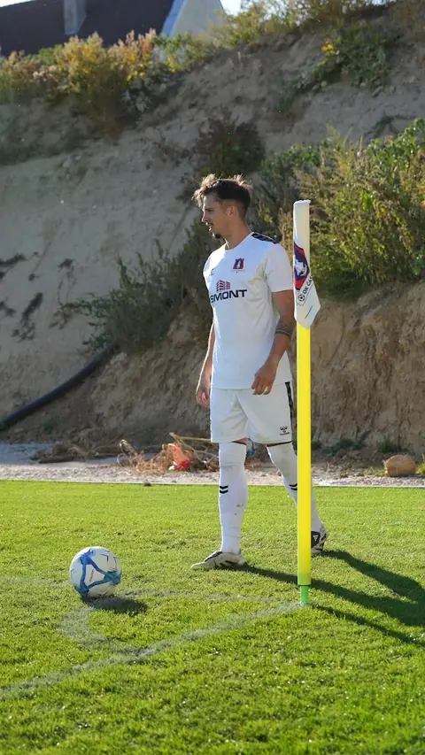
15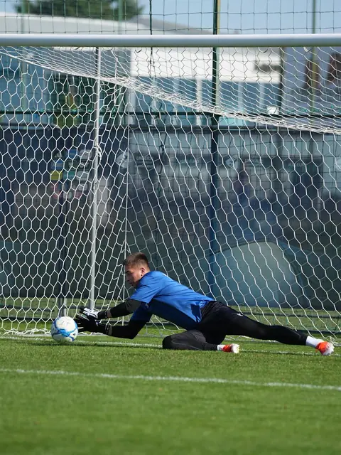
15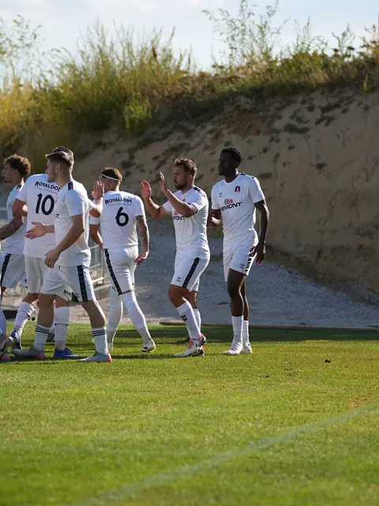
15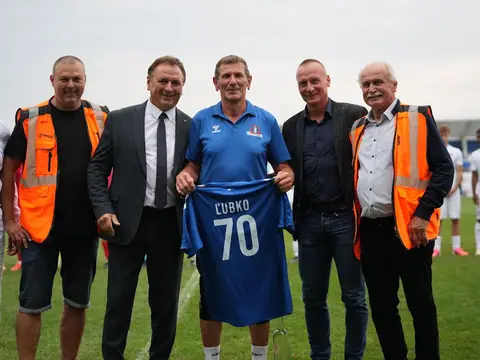
15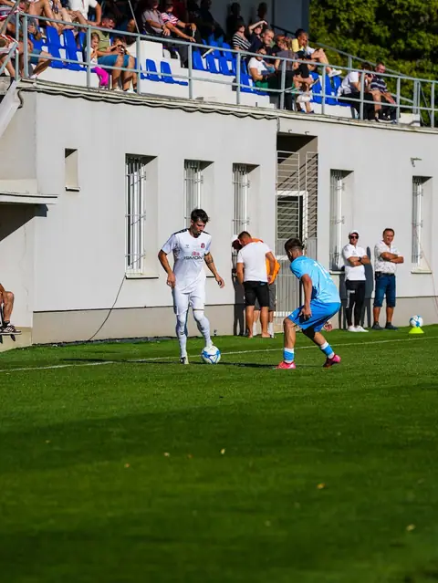
15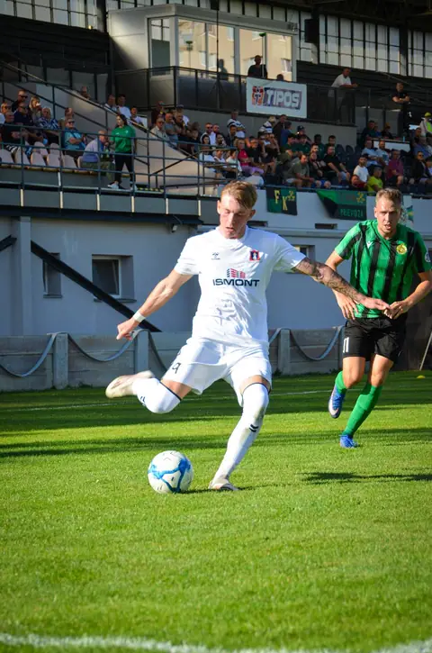
15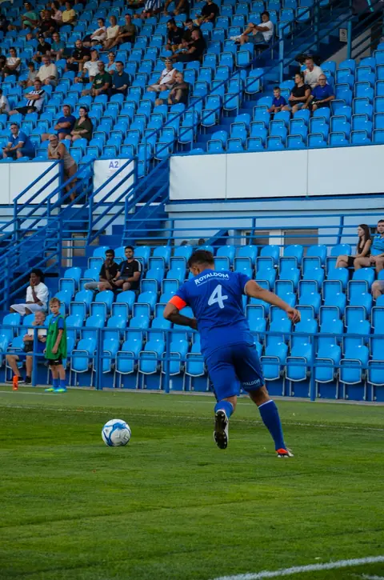
15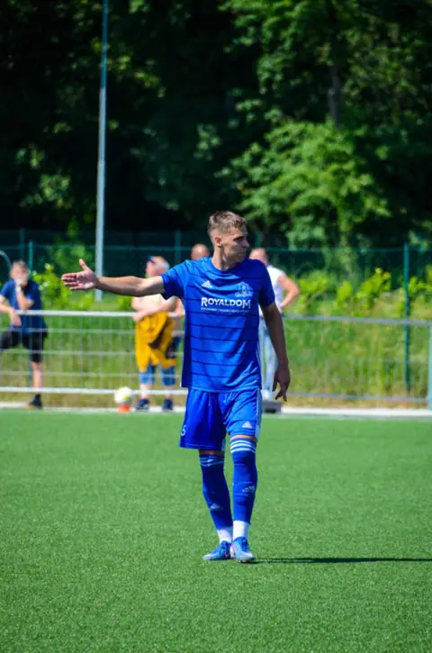
29